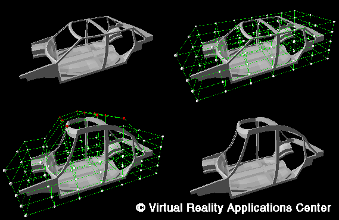

Modifying Finite Element Models in a Virtual Environment
The car frame geometry shown results from a finite element model (A). The
designer first constructs a control point lattice that surrounds the car
frame (B). This lattice can be sized and placed anywhere around the object
to define the area where shape change can occur. The user then selects
several control points and moves these points, causing the embedded finite
element model to change shape (C,D). This can be performed in
three-dimensional space using virtual reality interaction devices such as
the Pinch Glove or the Cyberglove.
Return to Introduction...